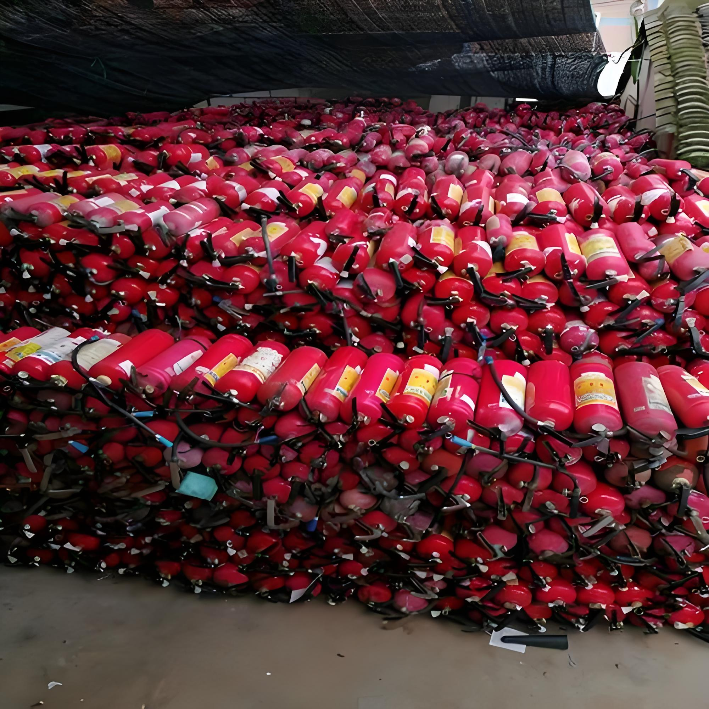

القيمة التجارية لطفايات الحريق المستعملة: لماذا هي صفقة ذكية؟
حين تُخرج شركة طفاياتها من الخدمة بعد 5 سنوات، فغالباً ما تخرج أسطوانات ما زالت في حالة ممتازة — بين 60% و 80% من قيمة الطفاية تكمن في الأسطوانة الفولاذية نفسها. هذه الفجوة بين "مستعمل" و"منتهي" هي بالضبط ما يبني عليه تجار ومزودو خدمات السلامة في الخليج وأفريقيا هامش ربح حقيقياً. هنا نفكك الاقتصاد الكامل لهذه السوق.

القيمة الحقيقية: 60-80% من الطفاية هي الأسطوانة
عندما تشتري طفاية بودرة 6 كغ جديدة بسعر 30 دولاراً، فأنت تدفع نحو 60-80% من هذا السعر مقابل الأسطوانة الفولاذية والصمام — وهما عنصران مصممان ليعملا 20-25 سنة. مادة البودرة نفسها لا تتجاوز بضعة دولارات.
وهذا يعني أن طفاية عمرها 5 سنوات، أسطوانتها سليمة، ليست "قديمة" اقتصادياً بأي مقياس. دورة تجديد كاملة — تفريغ وفحص واختبار ضغط وصمام جديد وبودرة جديدة — تُرجعها إلى مواصفات التشغيل الكاملة بكلفة جزء بسيط من سعر الوحدة الجديدة.
الأرقام: مقارنة الكلفة المباشرة
| البند | جديدة | مجددة (معبأة وموثقة) | الوفر |
|---|---|---|---|
| بودرة ABC — 4 كغ (FOB) | ~$18 | ~$11 | ~39% |
| بودرة ABC — 6 كغ (FOB) | ~$23 | ~$14 | ~39% |
| ثاني أكسيد الكربون — 2 كغ (FOB) | ~$45 | ~$28 | ~38% |
| عجلة بودرة — 50 كغ (FOB) | ~$420 | ~$185 | ~56% |
الوفر يتضخم كلما كبرت الوحدة — لأن كلفة التجديد لا تنمو بنفس سرعة سعر البيع الجديد. الوحدات الكبيرة والعجلات المتنقلة هي الأرض الأكثر ربحية في هذه السوق.
💡 القاعدة الذهبية للمشتري: الوحدة المجددة الجيدة ليست "أرخص" بل "أوفر" — نفس الأسطوانة المختبرة، نفس المادة الجديدة، نفس سجل الصيانة، بسعر أقل. الفرق الحقيقي يظهر فقط في الأرقام أعلاه.
من يشتري؟ أربع فئات تدفع نقدياً
1. مقاولو التجهيز والمشاريع
مشروع سكني متوسط يحتاج 300-500 طفاية لاجتياز الدفاع المدني. الفرق بين جديد ومجدد في هذا الحجم هو 3,000-5,000 دولار تذهب مباشرة إلى هامش المقاول — دون أن يلاحظ المفتش أي فرق، لأن الوحدة المجددة الموثقة تلبي نفس الاشتراط.
2. مزودو خدمات السلامة
شركات الصيانة التي تدير عقود تفتيش سنوية لمئات المنشآت تحتاج مخزون استبدال دائم. شراء مجدد بالجملة يمنحهم قدرة تسعير تنافسية مع هامش خدمة مريح.
3. المصانع والمستودعات
مستودع لوجستي يحتاج 200 طفاية موزعة على أرجائه ضمن ميزانية سلامة محددة. الوحدات المجددة تضاعف عدد الطفايات الممكن شراؤها بنفس الميزانية — أي تغطية سلامة أفضل، لا أقل.
4. الموزعون في أسواق إعادة البيع
تاجر التجزئة في الخليج أو شرق أفريقيا يشتري حاوية 20 قدماً تحوي 1,500-3,000 وحدة، ويبيع محلياً بهامش إجمالي 30-60%. هذا العميل هو محرك هذا السوق بالجملة.
لماذا السوق الخليجي تحديداً؟
- توسع عمراني متسارع في السعودية والإمارات وقطر — كل مشروع جديد يعني طلب طفايات جديد.
- تشدد تفتيش الدفاع المدني — يفرض على كل منشأة طفايات صالحة وسجلات حديثة، فيولّد طلب استبدال دورياً.
- قطاع المنشآت الصغيرة والمتوسطة واسع جداً وحساس للسعر — وهو المشتري الطبيعي للوحدات المجددة الموثقة.
- القبول الفني: معظم اشتراطات المنطقة لا تميز بين جديد ومجدد ما دامت الأسطوانة موثقة ومادة الإطفاء فعالة.
مثال واقعي: حاوية 1,000 وحدة إلى جبل علي
لنحسب صفقة نموذجية لموزع في الإمارات يشتري طفايات بودرة 4 كغ مجددة:
| البند | القيمة |
|---|---|
| شراء 1,000 وحدة مجددة (FOB $11) | $11,000 |
| شحن بحري + تخليص + رسوم (تقديري ~$3/وحدة) | ~$3,000 |
| الضريبة (5% جمارك + 5% VAT) | ~$1,150 |
| الكلفة الإجمالية للوحدة | ~$15.15 |
| سعر البيع المحلي التقريبي | $22-28 |
| الربح الإجمالي (1,000 وحدة) | $7,000-13,000 |
أي هامش إجمالي بين 45% و 60% — أرقام نادرة في تجارة السلع الأخرى دون حاجة إلى تخزين مكلف أو ترخيص معقد.
المخاطر الثلاثة وكيف تتجنبها
- وحدات دون اختبار ضغط — اشترِ فقط من مورد يختم تاريخ الاختبار على الأسطوانة ويصدر شهادة. بدون الختم، بضاعتك لا قيمة قانونية لها.
- إعادة تعبئة بمواد قديمة — اسأل صراحة: هل البودرة جديدة بالكامل؟ رخّص دفع 3-5% زيادة مقابل مادة جديدة، فالبودرة المتكتلة تُفشل الوحدة في أول استخدام.
- صمامات معاد استخدامها — السبب الأول لتسرب الضغط بعد الاستلام. الوحدة المجددة الجيدة تأتي بصمام جديد، لا صمام منظف.
ما الذي نضيفه نحن في هذه المعادلة؟
في FireGuard Trading ندير الحلقة كاملة داخلياً: استرجاع الأسطوانات من السوق الصينية، الفرز، اختبار الضغط، استبدال الصمامات، إعادة التعبئة بمواد جديدة (راجع دليل إعادة التعبئة)، ثم التصدير المباشر إليك. لا وسطاء، ولا حلقات مفقودة في التوثيق — ما يصلك هو ما فحصناه بأعيننا.
الأسئلة الشائعة
كم أوفر عند شراء طفايات الحريق المستعملة بدل الجديدة؟
عادة بين 40% و 60% من سعر الوحدة الجديدة المماثلة، حسب الحجم والحالة. الوحدات المجددة المعبأة بمادة جديدة ومختبرة الضغط تحقق أفضل توازن بين السعر والجاهزية للخدمة.
من يشتري طفايات الحريق المستعملة؟
مقاولو التجهيز، ومزودو خدمات السلامة، والمصانع والمستودعات ذات الميزانيات المحدودة، وموزعو أسواق إعادة البيع في الخليج وأفريقيا وجنوب آسيا — أي كل من يحتاج كميات ضمن اشتراطات فنية دون كلفة الجديد.
هل الطفايات المستعملة قانونية للبيع؟
نعم، بشرط أن تكون الوحدة صالحة فنياً: أسطوانة اجتازت اختبار الضغط في موعدها، وصمام يعمل، ومادة فعالة، وسجل صيانة. الفارق بين طفاية صالحة وخردة هو التوثيق.
ما مدى الطلب على الطفايات المجددة في الخليج؟
الطلب مرتفع ومستمر بفعل التوسع العمراني وتشدد التفتيش وموسمية الصيف. الشركات الصغيرة والمتوسطة تحديداً تبحث عن خيار اقتصادي يفي بالاشتراطات — وهو ما توفره الوحدات المجددة الموثقة.
هل يمكن إعادة بيع الطفايات المستعملة بربح؟
نعم. شراء بالجملة بسعر FOB منخفض (مثلاً 11 دولاراً لطفاية 4 كغ) وبيع محلي بـ 22-28 دولاراً بعد الشحن والرسوم يعطي هامشاً إجمالياً يتراوح غالباً بين 30% و 60%.
ابدأ بحاوية تجريبية
أفضل طريقة لاختبار هذه السوق ليست القراءة بل حاوية واحدة: اطلب 500-1,000 وحدة مجددة موثقة، وجرّب دورة البيع كاملة في سوقك المحلي. نحن نوفر الكميات الصغيرة والكبيرة، ونرفق كل شحنة بشهادات اختبار الضغط وسجلات إعادة التعبئة التي يطلبها الدفاع المدني.